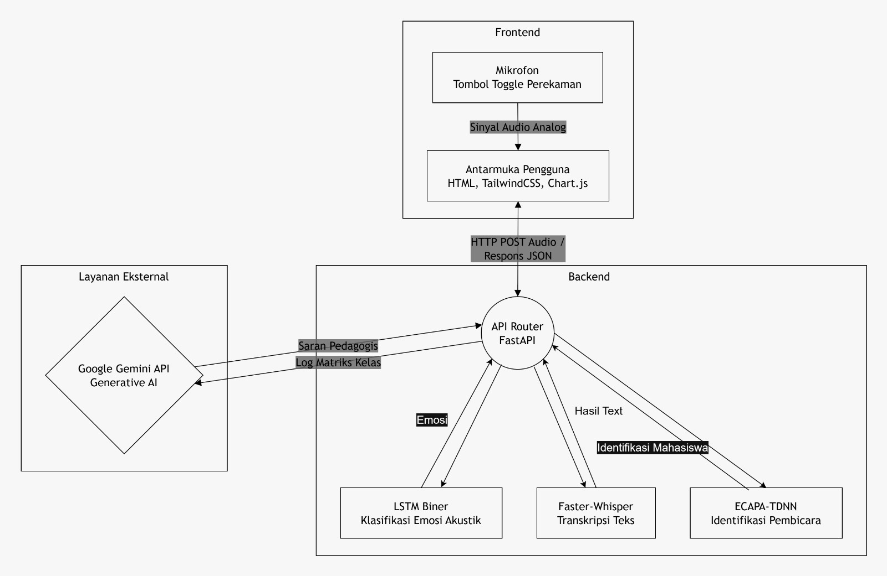

AI & Speech Processing
End-to-End System
Capstone
Classroom Engagement Audio Analysis System
Sistem Deteksi Suara untuk Analisis Keterlibatan Mahasiswa di Kelas
Merancang dan mengimplementasikan sistem pemrosesan audio end-to-end untuk mengidentifikasi pembicara dan mengukur tingkat keterlibatan mahasiswa dalam sesi interaksi kelas secara otomatis.

01 · Speaker Verification
SpeechBrain ECAPA-TDNN
SpeechBrain ECAPA-TDNN
02 · Speech-to-Text
Faster Whisper
Faster Whisper
03 · Classification
MLP / LSTM + keyword lexicon weighting
MLP / LSTM + keyword lexicon weighting
04 · Deployment
FastAPI inference backend
FastAPI inference backend
PythonLibrosaTensorFlow / KerasFastAPI
View on GitHub →